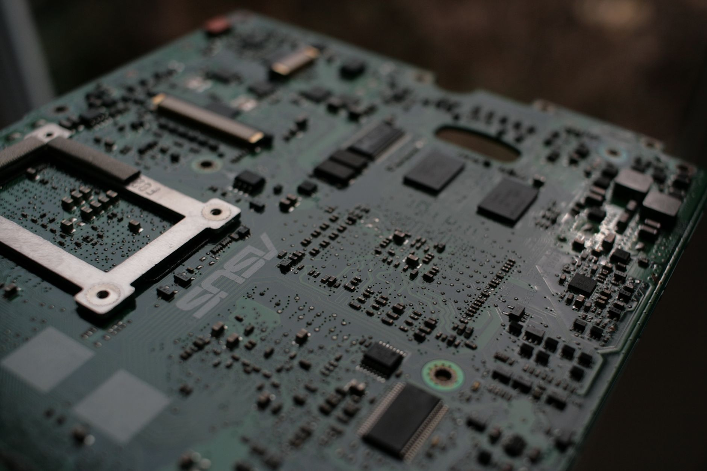

OCI, 日 기업과 패키징 웨이퍼 재생사업 진출

국내 화학 소재 기업 OCI가 일본 파트너사와 협력해 반도체 패키징용 캐리어 웨이퍼 재생(재사용) 사업에 진출한다고 디일렉이 보도했다. 첨단 후공정에서 발생하는 사용 후 실리콘 웨이퍼를 세정·연마·재가공해 재판매하는 방식으로, 소재 원가 절감과 자원 순환이라는 두 수요를 동시에 겨냥한 신사업이다.
캐리어 웨이퍼란 반도체 칩을 기판에 실장하는 첨단 후공정에서 임시 지지체로 쓰이는 실리콘 웨이퍼다. 공정이 끝나면 분리·제거되는데, 표면 연마와 세정 처리를 거치면 재사용이 가능하다. 기존에는 사용 후 폐기됐으나 팬아웃 웨이퍼 레벨 패키징(FOWLP)·칩렛 등 첨단 패키징 수요 폭발로 재생 웨이퍼의 가치가 크게 높아졌다.
OCI는 웨이퍼 재생 기술을 보유한 일본 기업과의 기술 협력을 통해 국내 시장 진출을 추진 중이다. 일본은 실리콘 웨이퍼 생산·가공 분야에서 세계 최고 수준의 기술력을 보유하며, OCI는 국내 반도체 소재 고객사 네트워크와 유통 인프라를 보완 자산으로 제공한다. 기술과 시장 네트워크를 교환하는 전형적인 한·일 소재 협력 모델이다.
삼성전자·SK하이닉스 등이 FOWLP·칩렛 패키징 등 첨단 후공정으로 빠르게 전환하면서 패키징용 캐리어 웨이퍼 소비량이 급증하고 있다. 신규 웨이퍼 수급이 타이트한 시장에서 재생 웨이퍼는 공급 안정성과 원가 우위를 동시에 제공하는 솔루션으로 부상하고 있다. 주요 패키지하우스(후공정 업체)들이 재생 웨이퍼 도입 검토에 나서는 움직임이 포착되고 있다.
재생 웨이퍼는 신규 생산 웨이퍼 대비 가격이 30~50% 저렴한 것으로 알려져 있다. 첨단 패키징 공정에서 캐리어 웨이퍼는 소모품처럼 다량 사용되기 때문에, 재생 웨이퍼 활용은 패키지하우스의 원가 경쟁력을 직접적으로 높이는 수단이 된다. 단가 인하 압력이 거센 후공정 시장에서 원재료비 절감은 수익성을 좌우하는 핵심 변수다.
OCI는 폴리실리콘을 주력으로 해온 화학 소재 기업으로 최근 반도체 소재로 외연을 확장하고 있다. 올해 2분기에도 반도체 소재 부문이 실적을 견인해 영업이익 433억 원을 달성했다. 웨이퍼 재생사업은 기존 폴리실리콘·실리콘 소재 기반에 후공정 솔루션을 더하는 수직 계열화 시도로 읽힌다.
재생 웨이퍼 사업은 반도체 제조 부산물을 재활용하는 '반도체 순환경제' 개념과 맞닿아 있다. 실리콘 원재료 소비를 줄이고 탄소 발자국을 낮추는 효과가 있어 고객사의 ESG 지표 개선에도 기여한다. 글로벌 반도체 기업들이 ESG 공급망 관리를 강화하는 추세에서 재생 소재 채택이 공급사 선택 기준이 되고 있다.
글로벌 재생 웨이퍼 시장은 2026년 기준 약 15억 달러 규모로 추정되며 첨단 패키징 수요 성장과 함께 연평균 12% 이상 성장할 것으로 전망된다. 현재 일본·대만 업체들이 시장을 주도하고 있어, OCI의 진입은 국내 업체 최초 사례가 될 가능성이 크다. 시장 초기 진입자 우위를 점할 수 있는 시점이라는 평가도 나온다.
재생 웨이퍼 시장은 표면 결함 기준이 극도로 엄격해 고도의 연마·세정 기술이 요구된다. 불량률이 조금이라도 높으면 후공정 수율 저하로 직결되기 때문에, 고객사 품질 인증 취득이 사업화의 핵심 관문이다. OCI가 일본 파트너 기술력을 기반으로 인증을 얼마나 빠르게 확보하느냐가 시장 진입 속도를 결정하는 변수다.
업계는 OCI의 웨이퍼 재생사업 진출이 국내 패키징 소재 공급망 다양성을 높이는 긍정적 신호라고 평가한다. 시장이 성숙하면 SiC(탄화규소)·사파이어 등 특수 웨이퍼 재생으로도 확장될 가능성이 있다. 반도체 소재 자립도 강화와 순환경제 전환이라는 두 목표를 동시에 추구하는 행보로, 이후 사업 진행 속도에 업계 관심이 집중되고 있다.